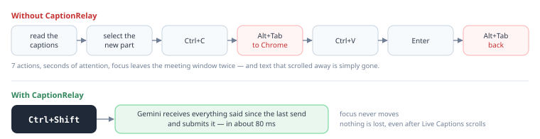

فرض کنید در یک مصاحبه یا جلسهی آنلاین هستید. Windows 11 با Live Captions حرفهای طرف مقابل را زنده به متن تبدیل میکند. میخواهید در لحظههای مهم، هر چه از آخرین بار گفته شده را به یک چت هوش مصنوعی (Gemini) بدهید تا کمکتان کند — بدون موس، بدون تایپ، و بدون اینکه پنجرهی جلسه را ترک کنید.

dot net eight بعداً .net 8 میشود). پس «متن جدید» را نمیشود با
یک مقایسهی سادهی رشته پیدا کرد.| هدف | نتیجه در طراحی | فصل |
|---|---|---|
| یک کلید، بدون حرکت دیگر | هوک سراسری کیبورد و ماشین حالت برای Ctrl+Shift | 7 |
| هیچ کلمهای گم نشود | رونوشت کامل جلسه در اپ، ادغام هوشمند snapshotها، sentIndex و ticket | 5، 6 |
| فوکوس هرگز جابهجا نشود | تایپ در صفحه از داخل افزونه (DOM)، نه با شبیهسازی کیبورد؛ پنجرهی نشانگری که فعال نمیشود | 12، 15 |
| کار در تب پسزمینه و minimize | انتظار با MutationObserver به جای تایمر، جلوگیری از discard، و reload کردن تب یخزده | 14 |
| امن، فقط روی همین کامپیوتر | سرور loopback، بررسی Origin، توکن تصادفی ۲۵۶ بیتی | 9 |
| امروز Gemini، فردا ChatGPT و API | پروتکل و اپ بیطرف؛ انتزاع provider در افزونه | 10، 12 |
| حریم خصوصی | لاگها هرگز متن مکالمه ندارند؛ توکن فقط به شکل fingerprint | 9 |
CaptionRelay is a small Windows tray app plus a Chrome extension. One global hotkey takes everything Windows Live Captions has heard since the last send and submits it into an open Gemini chat. The hard parts were that the caption text is a rolling, self-correcting window, that there is no API to read it, and that the target is a web page in a background tab — all without ever stealing focus or losing a single word.